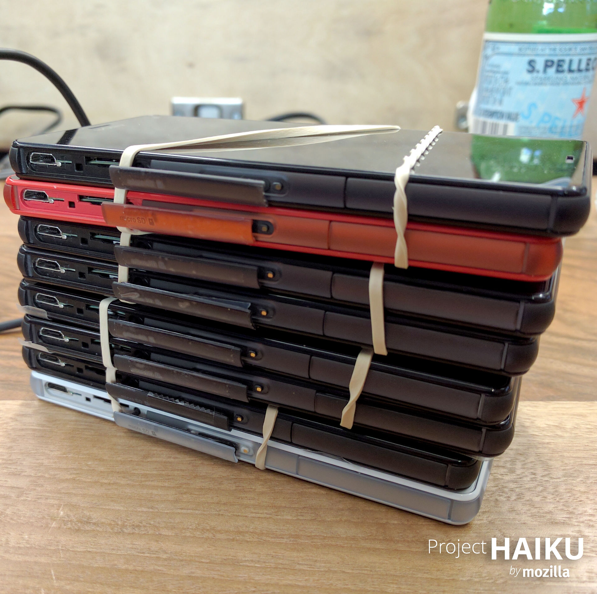

Connected Devices - Mozilla a IoT
Michal Stanke
<mstanke@mozilla.cz>
,
@MozillaCZ
,
OpenAlt 2016, Brno
Connected Devices
Connected Devices
Projekty
jen potenciální produkty
user-centric problémy
uživatelé > problém > identifikace možného řešení, technologií atp.
interoperabilita, bezpečnost a soukromí, řešení skutečných problémů
přispívat může kdokoli, projekt ale zakládá Mozilla
Sensor Web
Tchaj-pej
mnoho jednotlivých senzorů
Arduino + senzor + WiFi
platforma pro sběr dat
znečištění ovzduší pevnými/prachovými částicemi (PM2.5)
sensorweb.io/index.html
Sensor Web
Haiku
jaká uživatelská skupina není vůbec pokryta?
Haiku
jaká uživatelská skupina není vůbec pokryta?
dvanáctileté dívky
deníky > co by chtěly mít
komunikace s kamarády
plán: náramek, prototyp: přívěsek s tlačítkem
Haiku + Smart Home
spojeno s projektem Smart Home / Totem
komunikace prarodičů s dětmi (6-10 let)
obě skupiny potřebují pomoc rodičů
krátké zprávy, hovory
stacionární zařízení
Haiku + Smart Home

Haiku + Smart Home
Magnet
fyzický web, majáčky
kontextové informace
aplikace pro Android a iOS
obchody, muzea, ...
Abigail
ovládání hlasem
zaneprázdněné rodiny
nyní testování prototypů
kdo se zapojí rozhoduje Facebook
Vaani :-(
Deep Speech
speech to text (STT) a text to speech (TTS)
studentský projekt
publikace Baidu
zatím pouze americká angličtina
následují:
Pipsqueak - na straně klienta
Murmur - korpus pro trénování STT (tisíce hodin)
Děkuji
Michal Stanke
@MozillaCZ
wiki.mozilla.org/Connected_Devices
sensorweb.io/index.html
mzl.la/haiku
mzl.la/magnet
Prezentace
:
bit.ly/2ehhlPZ